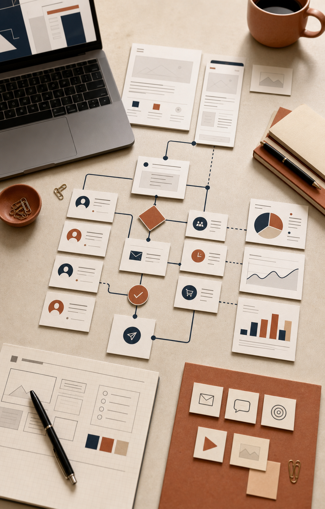

Your website no longer reflects the quality of your business.
It may still exist, but it is not earning trust, clarifying the offer, or turning visitors into qualified conversations.
Guided digital growth for busy business owners
Ozmo Digital brings website design, marketing, automation, and lead capture into one calm, connected system so you can focus on running the business you built.
It may still exist, but it is not earning trust, clarifying the offer, or turning visitors into qualified conversations.
Good ideas stay scattered across notes, drafts, calendars, and tools while the day-to-day work takes over.
Forms, inboxes, calls, and reminders are not connected, so interested people can lose momentum before they ever become customers.
The Guide
You should not have to become a web designer, marketing strategist, copywriter, and automation specialist just to keep your digital presence moving. We shape the message, build the experience, connect the systems, and keep improving the parts that turn attention into action.
A Simple Plan
We review your website, message, lead path, marketing rhythm, and follow-up gaps.
We create the website, messaging, campaigns, lead capture, and automation your business actually needs.
We refine what is working so leads are captured, followed up with, and converted more consistently.
The System

Clear messaging, refined design, and conversion paths built around the visitor's next step.
Campaigns, content direction, and practical rhythm so your business stays visible without constant scramble.
Forms, offers, and calls to action shaped to turn interest into qualified conversations.
Connected workflows that help leads receive the right response at the right time.
A steady partner for updates, improvements, and the digital details that keep momentum from fading.
The Transformation
Dated site, unclear message, inconsistent marketing, manual follow-up, and too many disconnected tools.
A polished presence, clearer leads, connected systems, and more time to focus on the business itself.
Request Your Digital Growth Audit
Tell us where your digital presence feels stuck. We will look for the gaps, missed opportunities, and practical improvements that can help your business turn attention into momentum.